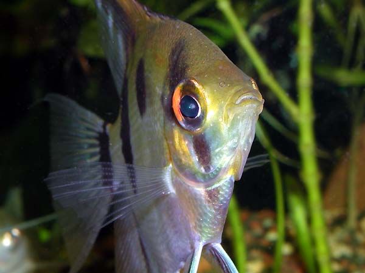

Скалярия
На фотографии глаз скалярии похож на объектив. Вполне возможно, что она видит объектив камеры и пытается понять, чей это глаз.
Эту фотографию я видел в качестве логотипа на других сайтах.

На фотографии глаз скалярии похож на объектив. Вполне возможно, что она видит объектив камеры и пытается понять, чей это глаз.
Эту фотографию я видел в качестве логотипа на других сайтах.